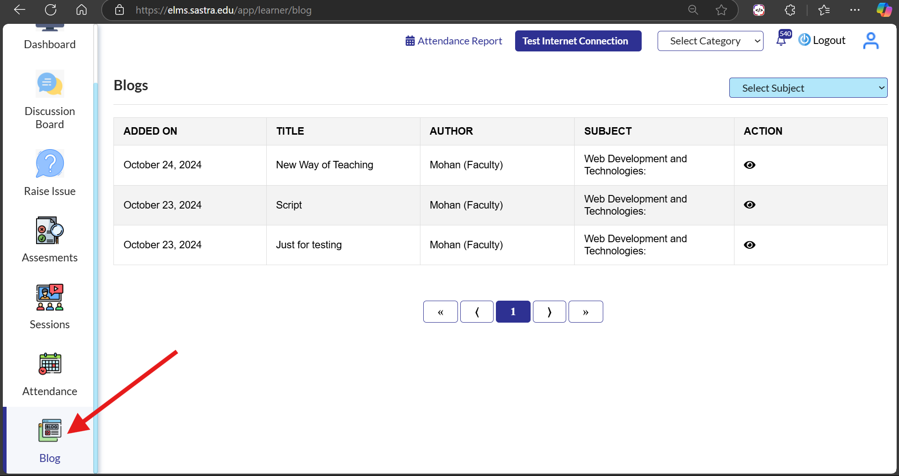

【2】Sastra Dashboard Page
The dashboard provides an overview of your courses, notifications, and key resources for quick access.
【3】Finding My Current Program
Locate and view details about the program you are enrolled in easily using the dashboard navigation.
【4】Semesters
Explore all the semesters you are enrolled in and access relevant materials for each one.
【5】Accessing My Content
Find and view the content for your enrolled courses using these two methods:
Option I: Navigate via the course dashboard.
Option II: Use the sidebar menu to directly access specific subjects.
【6】Viewing My Progress
Track your progress through detailed statistics and visual indicators available in your course dashboard.
【7】Tracking My Attendance
Monitor your attendance records and ensure consistency in your course participation.

【8】Accessing Live Class Recordings
Revisit past live classes by accessing the recorded sessions available in the recordings section.
【9】Joining My Class
Attend your live classes by clicking on the sessions tab in the navigation menu.
【10】Participating in the Community
Engage in discussions and collaborate with peers through the community discussion boards.
【11】Viewing My Assessments
Stay updated with your assessments and monitor your performance with detailed evaluation reports.
【12】Reading Blogs
Expand your knowledge with curated blogs on various topics relevant to your studies.
